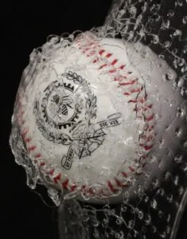
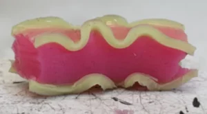

Constitutive response
Modeling how materials deform under complex loading paths.
Research theme
Predictive models connect material microstructure, manufacturing history, and part-level performance.
This theme develops models that translate observations at small scales into useful engineering predictions. Projects combine mechanical testing, constitutive laws, numerical simulations, image-based analysis, and data-informed calibration.
The goal is not only to reproduce experimental curves, but to understand which mechanisms control behavior and how those mechanisms can be used in design. This helps the lab connect material science, mechanics, and manufacturing decisions in a coherent workflow.
Better predictions reduce trial-and-error, accelerate material selection, and support safer design of advanced components before expensive prototypes are built.



Related projects
Modeling how materials deform under complex loading paths.
Connecting images and tests to predictive parameters.
Using numerical tools to guide experiments and design.